From Singil Station to the blue gate
Line 1, Exit ① · about 500 m, 5 minutes on foot.
-
🗺️
Full route
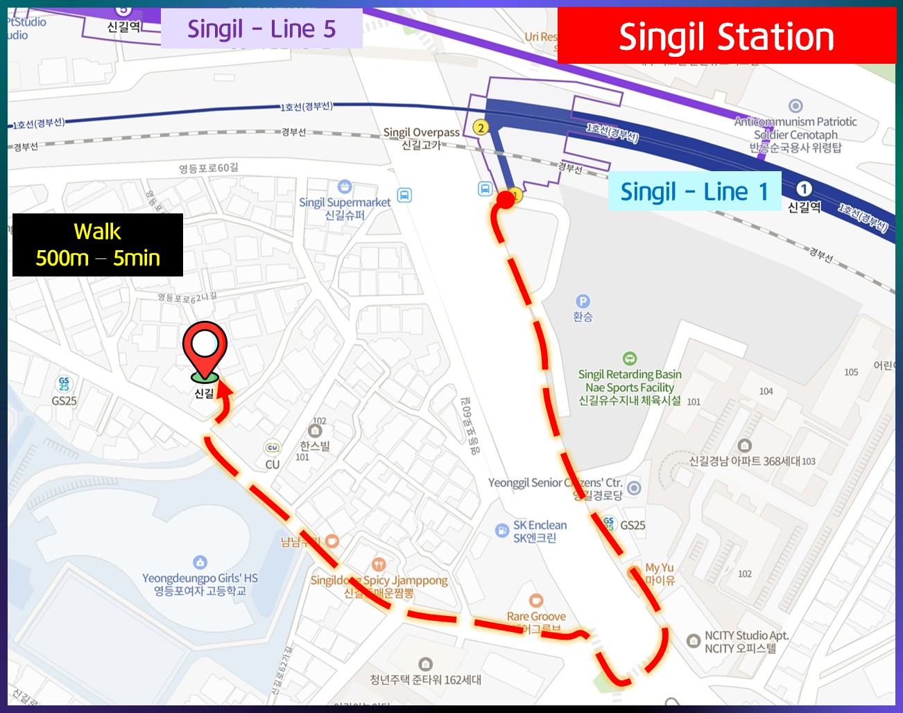
-
1
Come out of Exit ①
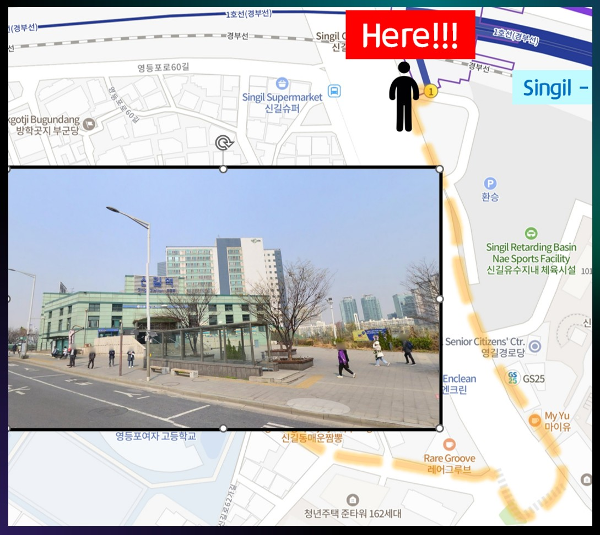
-
2
Go straight until you reach the crosswalk
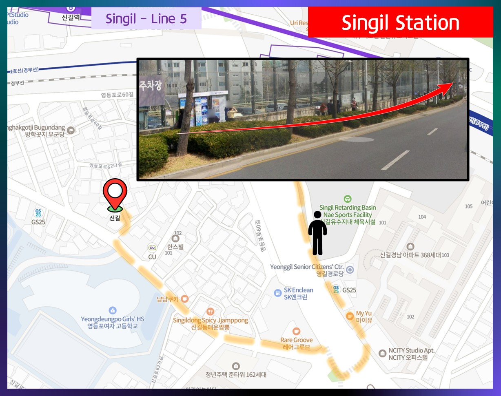
-
3
Cross at the crosswalk
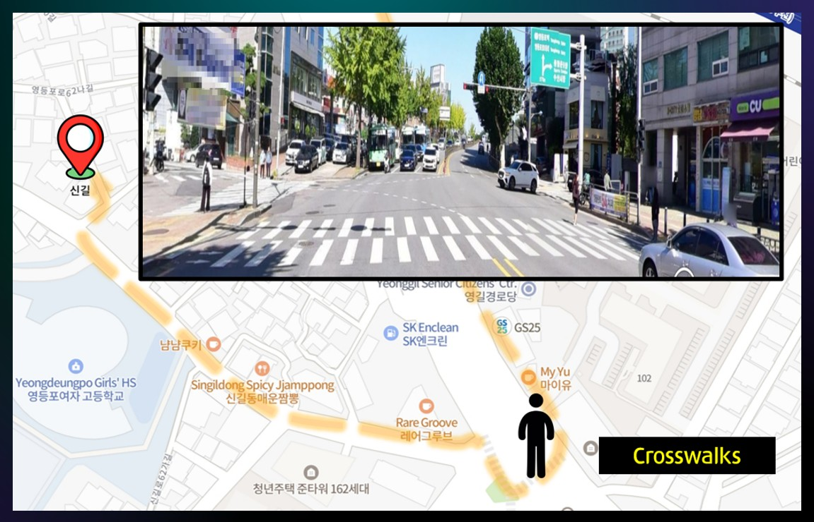
-
4
Walk straight toward Yeongdeungpo Girls’ High School
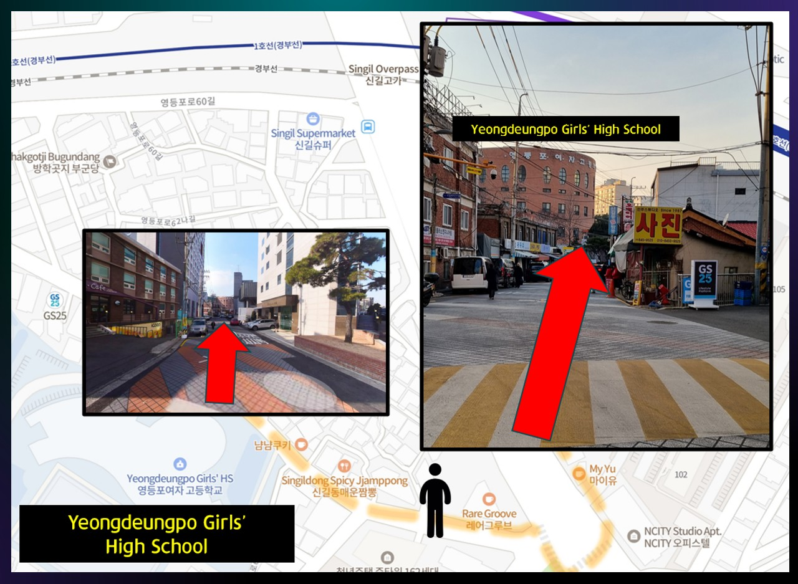
-
5
Pass the CU convenience store
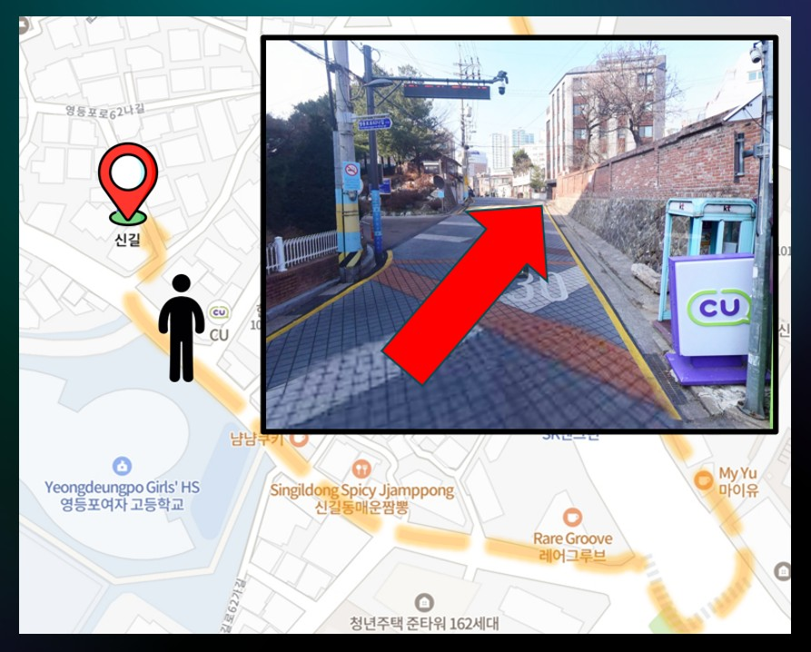
-
6
After the brick wall, take the stairs just up the alley on the right
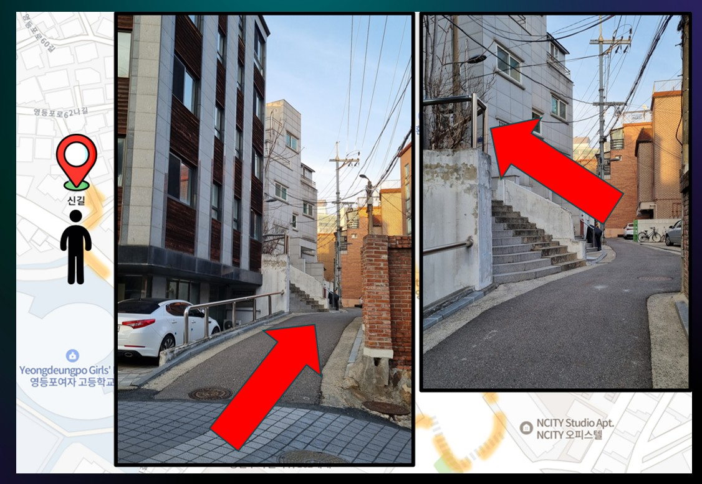
-
7
The blue gate, No. 24. You’re here
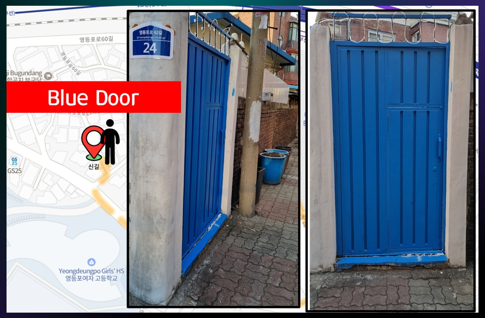


You made it!
Push the blue gate to open it.
Getting around from here
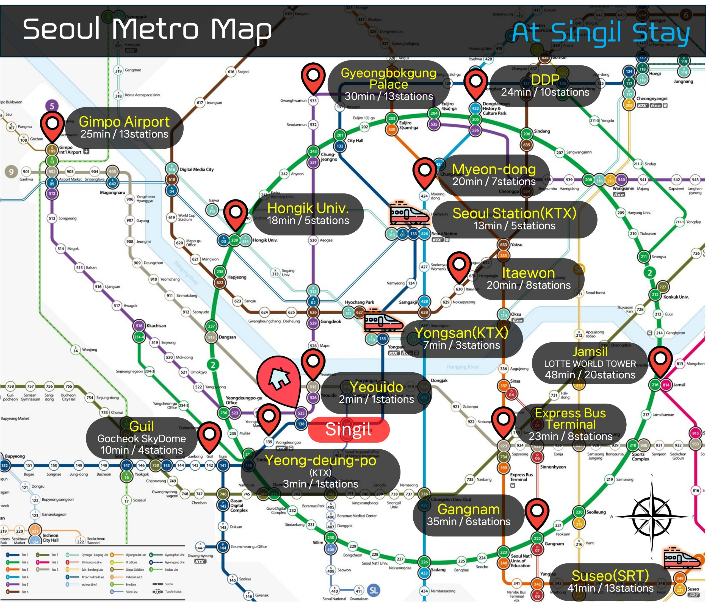
Tap any image to open it full size and zoom in.
Shortcut, 180 m · 2 minRoute from the gate to the station. No suitcase only (stairs). Coming in, walk it in reverse.
-
🗺️
Shortcut route
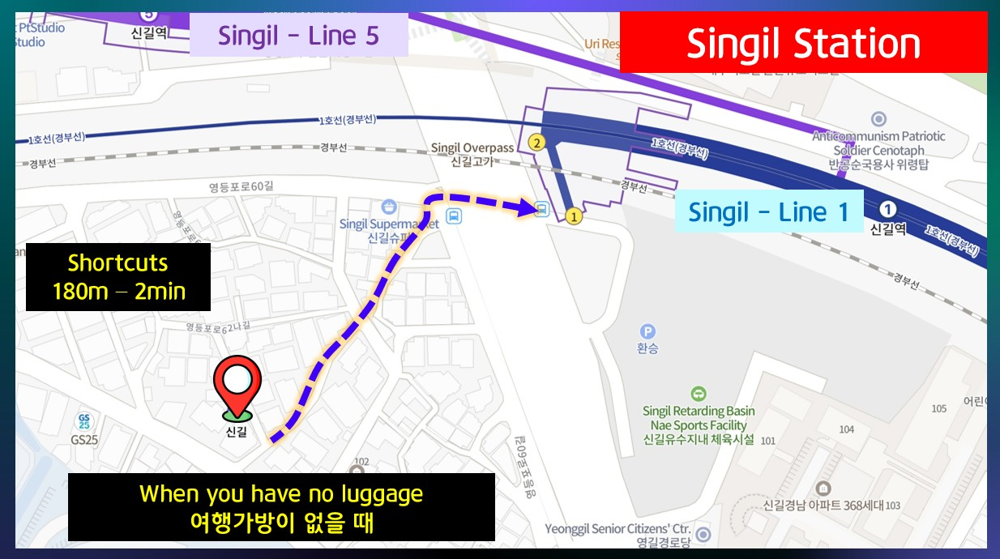
-
1
Leave the gate and go down the stairs, then right
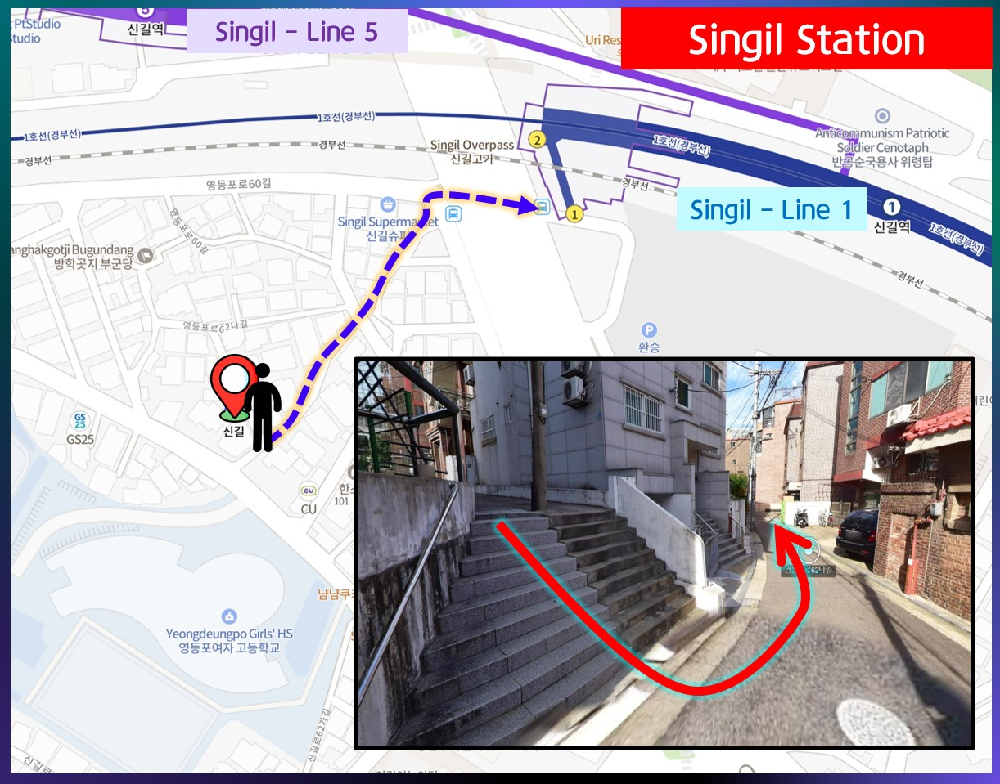
-
2
Follow the alley past the pink wall
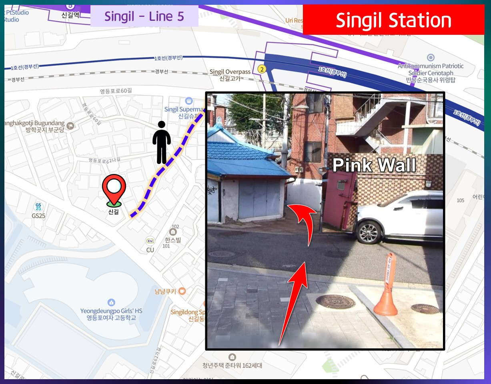
-
3
Under the overpass is the subway entrance
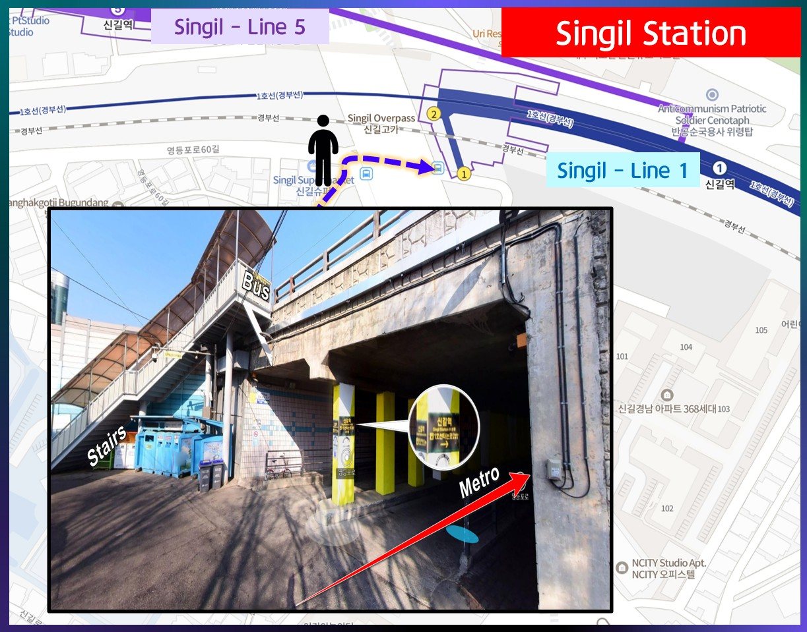


-
🗺️
전체 지도
-
1
1번 출구로 나오세요
-
2
횡단보도가 나올 때까지 직진하세요
-
3
횡단보도를 건너세요
-
4
영등포여자고등학교 건물을 바라보며 직진
-
5
CU 편의점을 지나서
-
6
담벼락을 지나 오른쪽 골목 바로 위 계단
-
7
24번지 파란 대문, 도착!
도착했어요! 대단해요!
파란 대문은 밀어서 열어주세요.
여기서 가는 길
사진을 누르면 원본 크기로 열려서 확대해 볼 수 있어요.